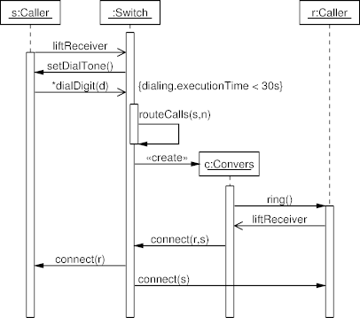

Sequence Diagram Example: Lifeline Constraints
The following diagram, based on Figure 18-4 appearing on p. 252 of the
UML User Guide, illustrates constraints on an object's lifeline,
used both as genuine constraints, and to place a message label
on a particular position.
In addition, this diagram also uses nested activation.
Diagram

Diagram Source Code
# UML User Guide: Figure 18-4
.PS
copy "sequence.pic";
movewid = 0.5;
# Define the objects
object(S,"s:Caller");
object(W,":Switch");
pobject(C);
object(R,"r:Caller");
# Message sequences
step();
active(W);
async(); message(S,W,"liftReceiver"); sync();
active(S);
message(W,S,"setDialTone()");
async(); message(S,W,"*dialDigit(d)"); sync();
lconstraint(W,"{dialing.executionTime < 30s}");
active(W);
message(W,W,"routeCalls(s,n)");
inactive(W);
cmessage(W,C,"c:Convers");
active(C);
message(C,R,"ring()");
active(R);
async(); message(R,C,"liftReceiver"); sync();
message(C,W,"connect(r,s)");
message(W,S,"connect(r)");
# Specify label as a "constraint" to allign on W
message(W,R,""); lconstraint(W,"connect(s)");
step();
complete(S);
complete(W);
complete(C);
complete(R);
.PE
 Last change: Tuesday, October 28, 2014 4:26 pm
Last change: Tuesday, October 28, 2014 4:26 pm